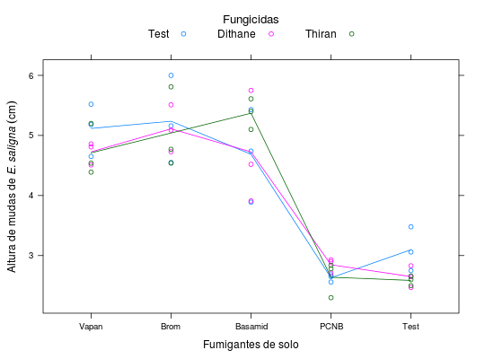

Os dados referem-se à altura (cm) de mudas de E. saligna Sm., de um ensaio inteiramente casualizado, de controle químico de "Damping-off" conduzido por Krugner (1971).
Um data.frame com 45 observações e 3 variáveis, em que
fungTest - Testemunha (sem fungicida), Dithane -
Dithane M-45 e Thiran.fumigBrom - Brometo de metila,
Basamid, PNCB e Test - Testemunha (sem fumigante).altBARBIN (2013), Exercício 8, pág. 202.
Krugner, T. L. Controle químico do "damping-off" em eucalipto. Piracicaba, 1971. 60p. Dissertação (Mestrado) - Escola Superior de Agricultura "Luiz de Queiroz"/USP.
library(lattice) data(BarbinEx8)#> Warning: data set ‘BarbinEx8’ not foundstr(BarbinEx8)#> 'data.frame': 45 obs. of 3 variables: #> $ fung : Factor w/ 3 levels "Test","Dithane",..: 1 2 3 1 2 3 1 2 3 1 ... #> $ fumig: Factor w/ 5 levels "Vapan","Brom",..: 1 1 1 2 2 2 3 3 3 4 ... #> $ alt : num 4.65 4.86 4.54 4.55 4.73 4.54 3.89 3.91 5.61 2.68 ...xyplot(alt ~ fumig, groups = fung, data = BarbinEx8, type = c("p", "a"), xlab = "Fumigantes de solo", ylab = expression("Altura de mudas de" ~italic("E. saligna")~(cm)), auto.key = list(columns = 3, title = "Fungicidas", cex.title = 1.1))